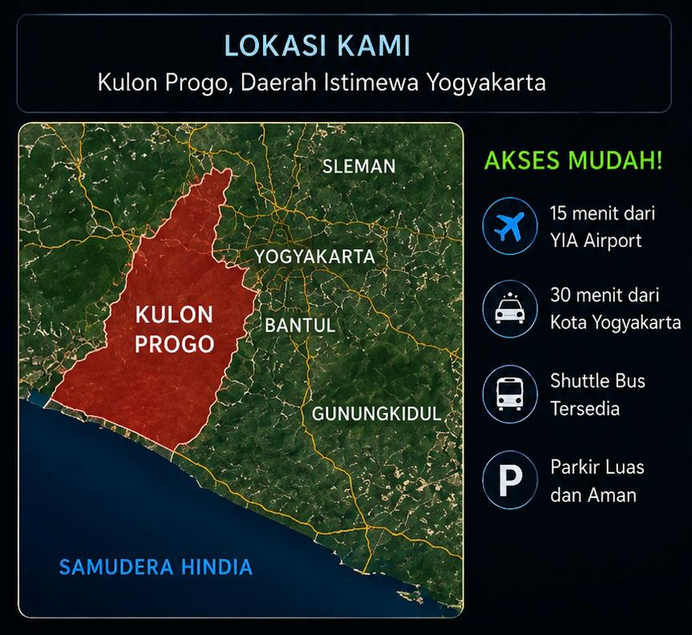

Journey Through Pandora
Sebuah theme park imersif bertema dunia Pandora, planet fiksi yang dipenuhi hutan bioluminescent bercahaya, pegunungan terapung yang megah, serta ekosistem eksotis yang hidup harmonis. Hadir pertama kali di Indonesia, berlokasi di Kulon Progo, Yogyakarta.
Naviora Park adalah taman hiburan tematik seluas 26 hektar yang menggabungkan keindahan alam Kulon Progo dengan semesta Avatar. Theme park ini mengangkat dunia fiksi Pandora, sebuah planet imajinatif yang dipenuhi hutan bioluminescent bercahaya, pegunungan terapung yang megah, sungai alami mengalir, dan makhluk eksotis yang hidup harmonis dalam ekosistem yang saling terhubung.
Seluruh konsep taman dirancang untuk menghadirkan pengalaman seolah pengunjung benar-benar memasuki dunia lain yang penuh keajaiban alam. Melalui suasana visual imersif, teknologi modern, dan wahana petualangan kelas dunia, Naviora Park hadir sebagai destinasi wisata tematik pertama di Indonesia dengan skala internasional.
Setiap realm terinspirasi langsung dari trilogi film Avatar dan menghadirkan pengalaman unik yang tak terlupakan.
Masuki hutan Pandora yang hidup dan bercahaya. Forest Realm menghadirkan suasana hutan bioluminescent dengan pohon-pohon raksasa, tanaman yang berpendar di malam hari, dan atmosfer mistis alam Pandora dari film Avatar pertama. Area seluas 10 hektar ini adalah pintu gerbang utama petualanganmu di Naviora Park.
Simulator terbang yang menghadirkan sensasi menunggangi Ikran di atas hutan Pandora. Rasakan hembusan angin dan pemandangan 360 derajat yang memukau.
Perjalanan menyusuri sungai bercahaya di tengah hutan Pandora. Nikmati panorama tanaman berpendar dan kehidupan liar Pandora dari atas perahu.
Pertunjukan multimedia dan interaktif di bawah Pohon Jiwa Pandora. Teknologi proyeksi imersif menciptakan koneksi spiritual dengan alam Pandora.
Jembatan gantung dan jalur petualangan di atas hutan Pandora. Rasakan pengalaman berjalan seperti Na'vi di antara kanopi pohon raksasa yang berpendar.
Selami keindahan lautan Pandora yang terinspirasi dari Avatar: The Way of Water. Ocean Realm menghadirkan sensasi dunia bawah laut yang penuh warna, makhluk laut Pandora, dan teknologi air spektakuler di area seluas 8 hektar.
Water coaster bertema makhluk laut Pandora bernama Ilu. Meluncur di atas jalur air yang berliku dengan semburan air yang menyegarkan.
Kolam bermain air bertema tematik dan area bermain keluarga yang terinspirasi dari kehidupan suku Metkayina di lautan Pandora.
Dark ride menjelajahi lautan Pandora bersama Tulkun, makhluk laut raksasa yang bijaksana. Sistem proyeksi bawah air yang memukau.
Petualangan edukatif bawah laut yang memperkenalkan ekosistem terumbu karang Pandora. Cocok untuk keluarga dan wisatawan yang ingin belajar sambil bermain.
Masuki kawasan vulkanik Pandora yang dramatis dan penuh adrenalin. Fire Ash Realm terinspirasi dari Avatar: Fire and Ash, menghadirkan lanskap lava yang menakjubkan, gua api yang panas, dan pertunjukan spektakuler di area seluas 6 hektar.
Roller coaster berkecepatan tinggi yang melintasi kawasan vulkanik Pandora. Rasakan panas dan adrenalin saat melaju di antara semburan api dan abu.
Eksplorasi gua lava interaktif yang penuh efek visual dan suara dramatis. Temukan rahasia tersembunyi di dalam perut bumi Pandora yang membara.
Arena tantangan keluarga bergaya suku api Pandora. Uji keberanian dan kerja sama tim dalam berbagai rintangan yang terinspirasi dari tradisi prajurit api.
Pertunjukan malam spektakuler dengan efek api nyata, cahaya dramatis, dan narasi epik tentang legenda gunung berapi Pandora. Atraksi utama Fire Ash Realm.
Naviora Park dirancang untuk memastikan setiap pengunjung menikmati pengalaman yang nyaman, aman, dan menyenangkan.
Restoran utama Naviora Park dengan kapasitas 200 pengunjung. Menyajikan menu khas Indonesia dan internasional dalam suasana hutan Pandora yang imersif dengan pemandangan air terjun buatan sebagai latar belakang.
Koleksi eksklusif merchandise Avatar dengan interior toko menyerupai pasar tradisional Na'vi. Hadirkan kenangan Pandora ke rumahmu.
Aplikasi resmi Naviora Park untuk navigasi, estimasi antrean real-time, booking wahana, smart ticketing cashless, dan crowd control system.
📍 Kawasan Perbukitan Menoreh, Daerah Istimewa Yogyakarta
Naviora Park terletak di kawasan perbukitan Menoreh yang dikelilingi hutan hijau dan dekat dengan pantai selatan. Lokasi strategis yang mudah dijangkau dari berbagai kota besar menjadikan Naviora Park sebagai destinasi wisata keluarga yang ideal untuk semua kalangan.
Akses Tersedia

Masuki dunia Pandora dan rasakan pengalaman yang tak terlupakan bersama keluarga, sahabat, dan orang-orang tercinta.